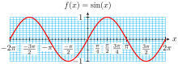
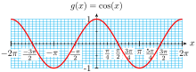
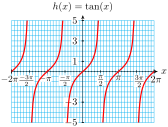
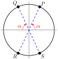
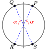

To convert from radians to degrees we multiply the radian measure by \(\dfrac{180\degree}{\pi}\text{.}\)
To convert from degrees to radians we multiply the degree measure by \(\dfrac{\pi}{180}\text{.}\)
Arclength Formula.
On a circle of radius \(r\text{,}\) the length \(s\) of an arc spanned by an angle \(\theta\) in radians is
\begin{equation*}
s = r\theta
\end{equation*}
On a unit circle, the measure of a (positive) angle in radians is equal to the length of the arc it spans.
The sine, cosine, or tangent of a particular angle is the same whether the angle is measured in radians or in degrees.
You should be familiar with the trig values of the special angles in radians.
Degrees
Radians
Sine
Cosine
Tangent
\(0\degree\)
\(0\)
\(0\)
\(1\)
\(0\)
\(30\degree\)
\(\dfrac{\pi}{6}\)
\(\dfrac{1}{2}\)
\(\dfrac{\sqrt{3}}{2}\)
\(\dfrac{1}{\sqrt{3}}\)
\(45\degree\)
\(\dfrac{\pi}{4}\)
\(\dfrac{1}{\sqrt{2}}\)
\(\dfrac{1}{\sqrt{2}}\)
\(1\)
\(60\degree\)
\(\dfrac{\pi}{3}\)
\(\dfrac{\sqrt{3}}{2}\)
\(\dfrac{1}{2}\)
\(\sqrt{3}\)
\(90\degree\)
\(\dfrac{\pi}{2}\)
\(1\)
\(0\)
undefined
To find the sine or cosine of a real number \(t\text{,}\) we draw an arc of length \(t\) on a unit circle, and then find the sine or cosine of the angle \(\theta\) determined by the arc.
Coordinates on a Unit Circle.
The coordinates of the point \(P\) determined by an arc of length \(t\) in standard position on a unit circle are
The domain of a function is the set of all possible input values. The range of a function is the set of all output values for the function.
\(f(x) = \sin (x)\).
Domain: all real numbers
Range: \([-1,1]\)
Period: \(2\pi\)

\(g(x) = \cos (x)\).
Domain: all real numbers
Range: \([-1,1]\)
Period: \(2\pi\)

\(h(x) = \tan (x)\).
Domain: all real numbers except \(\cdots,~ \dfrac{-3\pi}{2},~ \dfrac{-\pi}{2},~ \dfrac{\pi}{2},~ \dfrac{3\pi}{2},~\cdots\)
Range: all real numbers
Period: \(\pi\)

ExercisesChapter 6 Review Problems
Exercise Group.
For Problems 1–2, convert from degrees to radians. Give exact answers.
1.
\(\displaystyle 75\degree\)
\(\displaystyle 210\degree\)
\(\displaystyle 340\degree\)
2.
\(\displaystyle 130\degree\)
\(\displaystyle 300\degree\)
\(\displaystyle 12\degree\)
Exercise Group.
For Problems 3–4, convert from degrees to radians. Round to two decimal places.
3.
\(\displaystyle 27\degree\)
\(\displaystyle 142\degree\)
\(\displaystyle 218\degree\)
4.
\(\displaystyle 76\degree\)
\(\displaystyle 328\degree\)
\(\displaystyle 111\degree\)
Exercise Group.
For Problems 5–8, convert from radians to degrees. Round to hundredths if necessary.
5.
\(\displaystyle \dfrac{5\pi}{6}\)
\(\displaystyle \dfrac{3\pi}{10}\)
\(\displaystyle \dfrac{23\pi}{18}\)
6.
\(\displaystyle \dfrac{7\pi}{4}\)
\(\displaystyle \dfrac{8\pi}{15}\)
\(\displaystyle \dfrac{35\pi}{20}\)
7.
\(\displaystyle 2\)
\(\displaystyle 3.6\)
\(\displaystyle 0.8\)
8.
\(\displaystyle 4\)
\(\displaystyle 1.2\)
\(\displaystyle 5.3\)
Exercise Group.
For Problems 9–10, express each fraction of one revolution as an angle in radians.
9.
\(\displaystyle \dfrac{2}{3}\)
\(\displaystyle \dfrac{7}{12}\)
\(\displaystyle \dfrac{9}{8}\)
10.
\(\displaystyle \dfrac{5}{4}\)
\(\displaystyle \dfrac{4}{6}\)
\(\displaystyle \dfrac{2}{5}\)
Exercise Group.
For Problems 11–12, express each angle in radians as a fraction of one revolution.
11.
\(\displaystyle \dfrac{\pi}{4}\)
\(\displaystyle \dfrac{5\pi}{8}\)
\(\displaystyle \dfrac{7\pi}{3}\)
12.
\(\displaystyle \dfrac{11\pi}{6}\)
\(\displaystyle \dfrac{13\pi}{4}\)
\(\displaystyle \dfrac{\pi}{9}\)
Exercise Group.
For Problems 13–14, in which quadrant on a unit circle does an arc with given length lie?
13.
\(\displaystyle 2.15\)
\(\displaystyle 1.5\)
\(\displaystyle 6.0\)
14.
\(\displaystyle 5.4\)
\(\displaystyle 4.32\)
\(\displaystyle 3.1\)
15.
The Earth’s radius at the equator is 3960 miles. If you travel 150 miles along the equator, what fraction of its circumference have you covered? How many degrees of longitude have you crossed? Convert your answer to radians.
Use the arclength formula to calculate the answer to part (a). Do your answers agree?
16.
A lawn sprinkler has a range of 15 feet, and waters a porion of a circle whose curved edge is 39.27 feet long. Through what angle does the sprinkler turn?
17.
Many telecommunications satellites are put into geostationary orbits, so that they have the same period as the rotation of the earth, and hence stay in the same relative position seen from earth. Hundreds of these satellites orbit 22,300 miles above the equator in what is called the Clarke belt, named after Arthur C. Clarke. What is the speed of the satellites? (The radius of the earth is about 4000 miles.)
18.
The planet Neptune is 4504 million kilometers from the Sun. In one Earth year (365 days), it travels a distance of 171.58 million kilometers around its orbit.
What fraction of its orbit does Neptune travel in one Earth year? What angle in radians does it traverse in that time?
How many days does it take Neptune to complete one orbit around the Sun? What is its speed, in kilometers per day?
Earth is 150 million kilometers from the Sun. What is Earth’s orbital speed?
For Problems 21–22, sketch an arc with the given length in standard position on a unit circle. Find the coordinates of the terminal point. Round to tenths.
21.
\(\displaystyle 1\)
\(\displaystyle 2\)
\(\displaystyle 3\)
22.
\(\displaystyle 4\)
\(\displaystyle 5\)
\(\displaystyle 6\)
Exercise Group.
In Problems 23–24, the circle has radius \(r\text{,}\) and its center is the point \((0,0)\text{.}\)
23.
Find the coordinates of each point in terms of \(\alpha\text{.}\)
\(\displaystyle P\)
\(\displaystyle Q\)
\(\displaystyle R\)
\(\displaystyle S\)

24.
Find the length of each arc in terms of \(\alpha\text{.}\)
\(\displaystyle OP\)
\(\displaystyle OQ\)
\(\displaystyle PQ\)
\(\displaystyle QR\)

Exercise Group.
For Problems 25–26, find an exact value for the area of the sector.
25.
With a central angle of \(135\degree\) in a circle of radius 4 inches.
26.
With a central angle of \(240\degree\) in a circle of radius 12 centimeters.
Exercise Group.
For Problems 27–30, fill in the correct inequality symbol.
27.
If \(\dfrac{\pi}{2} \lt \alpha \lt \beta \lt \pi\text{,}\) then \(\cos (\alpha) \, \fillinmath{XX}\, \cos (\beta)\text{.}\)
28.
If \(\pi \lt \theta \lt \phi \lt \dfrac{3\pi}{2}\text{,}\) then \(\sin (\theta) \, \fillinmath{XX}\, \sin (\phi)\text{.}\)
29.
If \(\dfrac{3\pi}{2} \lt s \lt t \lt 2\pi\text{,}\) then \(\tan (s) \, \fillinmath{XX}\, \tan (t)\text{.}\)
30.
If \(\dfrac{\pi}{2} \lt x \lt y \lt \dfrac{3\pi}{2}\text{,}\) then \(\cos (x) \, \fillinmath{XX}\, \cos (y)\text{.}\)
Exercise Group.
For Problems 31–34, evaluate the function
31.
\(f(t) = 12 - 2.8 \sin (3.5t - 2)\) for \(t = 8\)
32.
\(h(x) = 2.4 + 6 \tan\left(\dfrac{3x-5}{4}\right)\) for \(x = 1.8\)
For Problems 35–38, find the reference angle in radians.
35.
\(\displaystyle \dfrac{5\pi}{6}\)
\(\displaystyle \dfrac{5\pi}{4}\)
\(\displaystyle \dfrac{3\pi}{8}\)
\(\displaystyle \dfrac{7\pi}{12}\)
36.
\(\displaystyle \dfrac{5\pi}{3}\)
\(\displaystyle \dfrac{9\pi}{8}\)
\(\displaystyle \dfrac{17\pi}{12}\)
\(\displaystyle \dfrac{7\pi}{6}\)
37.
\(\displaystyle 2.8\)
\(\displaystyle 3.9\)
\(\displaystyle 5.03\)
\(\displaystyle 1.5\)
38.
\(\displaystyle 1.2\)
\(\displaystyle 6.2\)
\(\displaystyle 2.36\)
\(\displaystyle 4.15\)
Exercise Group.
For Problems 39–40, find the angle of inclination of the line.
39.
\(2x + 5y = -3\)
40.
\(\dfrac{x}{8} - \dfrac{y}{11} = 1\)
41.
Prepare a Cartesian coordinate system with the \(x\)-axis scaled from 0 to 10 and the \(y\)-axis scaled from \(-2\) to \(2\text{.}\) Label multiples of \(\dfrac{\pi}{4}\) on the \(x\)-axis.
Sketch an accurate graph of \(y = \cos (x)\) on the grid. Sketch an accurate graph of \(y = \sin (x)\) on the same grid.
42.
Use your calculator to make a table of values for \(Y_1 = \sin (x),~ Y_2 = \cos (x),\) and \(Y_s = \dfrac{Y_1}{Y_2}\text{,}\) for \(0 \le x \le 3,\) and \(\Delta x = 0.1\text{.}\)
Plot the points \((x,Y_3)\) from the table. Identify the graph.
Exercise Group.
For Problems 43–46,
Graph the function for \(0 \le s \lt 2\pi\text{.}\) State the amplitude, period, and midline of the graph.
Use the graph to solve the equation for \(0 \le s \lt 2\pi\text{.}\)
43.
\(\displaystyle h(s) = 5 + 3\cos (2s)\)
\(\displaystyle 5 + 3\cos (2s) = 4.56\)
44.
\(\displaystyle f(s) = 4 - 2\sin (3s)\)
\(\displaystyle 4 - 2\sin (3s) = 2\)
45.
\(\displaystyle g(s) = 10 + 4.8\sin (s - 1.5)\)
\(\displaystyle 10 + 4.8\sin (s - 1.5) = 12\)
46.
\(\displaystyle j(s) = 1.5 + 0.25\cos (s + 0.5)\)
\(\displaystyle 1.5 + 0.25\cos (s + 0.5) = 1.4\)
Exercise Group.
For Problems 47–48, solve the equation graphically for \(0 \le x \lt 2\pi\text{.}\)
47.
\(6 + \tan (x - \dfrac{\pi}{6}) = 7\)
48.
\(3 - \tan (x + \dfrac{3\pi}{4}) = 4\)
Exercise Group.
For Problems 49–52, solve the equation exactly for \(0 \le x \lt 2\pi\text{.}\)
49.
\(\sin (\theta) = \dfrac{\sqrt{3}}{2}\)
50.
\(\sin (\theta) = -\dfrac{1}{2}\)
51.
\(\cos (\theta) = -1\)
52.
\(\tan (\theta) = \sqrt{3}\)
Exercise Group.
For Problems 53–58, find all solutions between \(0\) and \(2\pi\text{.}\) Round to two decimal places.
53.
\(\tan (t) = 5\)
54.
\(\cos (x) = -0.63\)
55.
\(\sin (h) = -0.26\)
56.
\(\tan (\phi) = -2.5\)
57.
\(\cos (\beta) = 0.95\)
58.
\(\sin (\alpha) = 0.1\)
Exercise Group.
For Problems 59–62, solve for \(x\text{.}\)
59.
\(\displaystyle \cos (x) = 0.35\)
\(\displaystyle \cos (0.35) = x\)
60.
\(\displaystyle \sin (x) = 0.84\)
\(\displaystyle \sin (0.84) = x\)
61.
\(\displaystyle \sin (x) = \dfrac{\pi}{8}\)
\(\displaystyle \sin \left({\pi}{8}\right) = x\)
62.
\(\displaystyle \tan x = 1.7\pi\)
\(\displaystyle \tan (1.7\pi) = x\)
Exercise Group.
For Problems 63–66, sketch the graph. State its domain and range.
63.
\(g(x) = 2x^2 + 4\)
64.
\(h(w) = 1 - \dfrac{1}{w^2}\)
65.
\(F(s) = -\sqrt{16 - s^2}\)
66.
\(G(t) = 4 + \sqrt{4 - t}\)
67.
Prove the Pythagorean identity \(\cos^2 (t) + \sin^2 (t) = 1\) by carrying out the following steps. Sketch a unit circle, and an arc \(t\) in standard position.
Write the equation of the unit circle.
Use trig ratios to write the coordinates of the terminal point \(P\) of the arc.
Substitute the coordinates of point \(P\) into your equation from part (a).
Does the identity hold for all values of \(t\text{?}\)
68.
Prove the tangent identity \(\tan (t) = \dfrac{\sin (t)}{\cos (t)}\) by carrying out the following steps. Sketch an arc \(t\) in standard position on a unit circle, and label its terminal point \((x,y)\text{.}\)
Write \(\sin (t)\) and \(\cos (t)\) in terms of \(x\) and \(y\text{.}\)
Write the definition of \(\tan (t)\text{.}\)
Substitute your results from part (a) into your expression for (b).
Does the identity hold for all values of \(t\text{?}\)